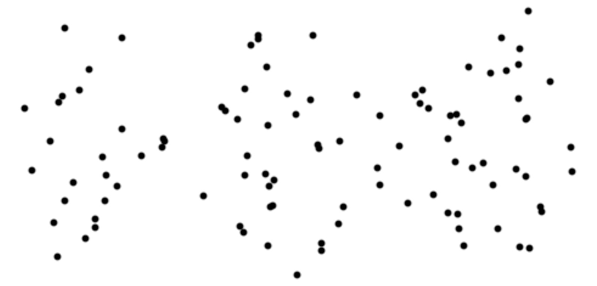
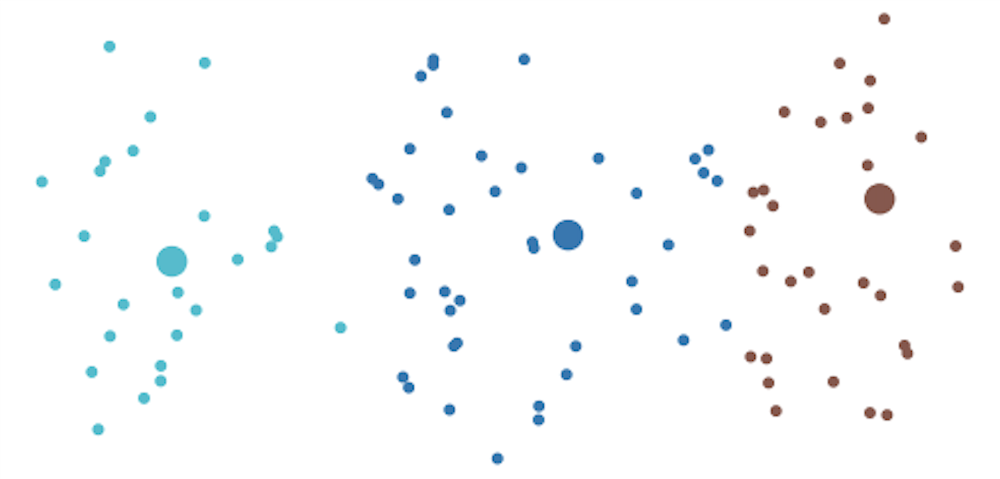
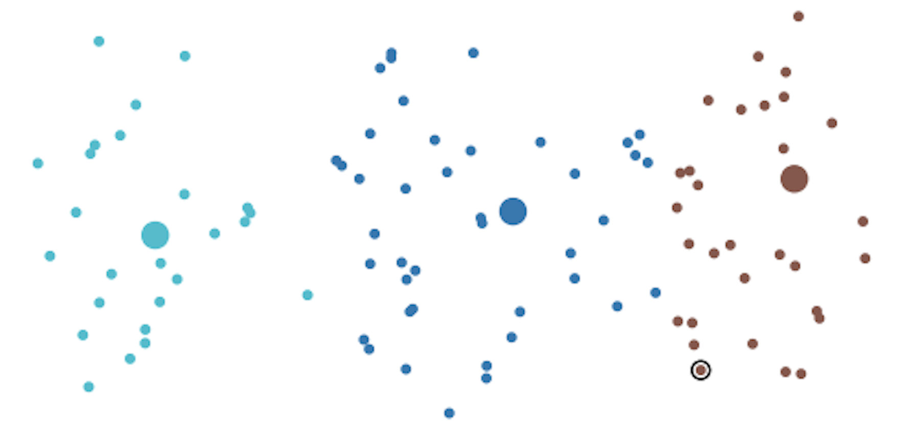
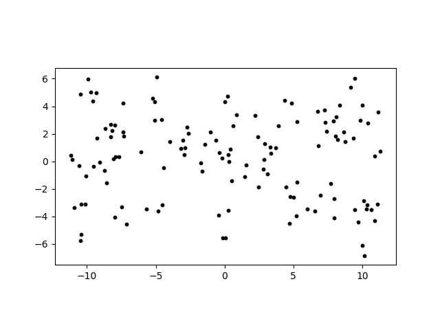
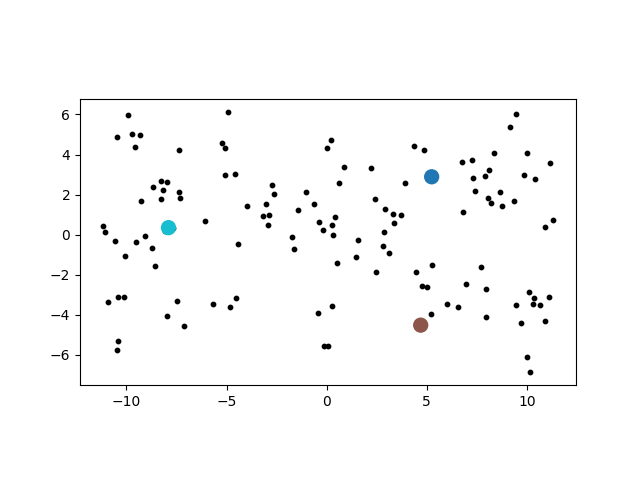

Introduction to k-Center and Visualization
Consider the following map of one hundred cities that Amazon ships to.

Suppose you are working at Amazon and you are tasked with the job of choosing three cities to locate brand new distribution centers. Your goal is to choose three cities so that the maximum distance between any city and its closest distribution center is minimized. The following map shows an optimal solution to this problem. Each of the proposed distribution center locations is shown with a big dot and each city is color coded according to its closest distribution center.

In the next figure we have circled the city that is farthest from its closest distribution center. The solution to the problem shown is optimal in the sense that for any other choice of three distribution center locations, the city that is farthest from its closest distribution center will be at least this far away.

Problem Statement
Given \(n\) points \(\mathbf{p}_1, \mathbf{p}_2, \ldots, \mathbf{p}_n\) in \(d\)-dimensional space, the objective of the k‑center problem is to choose \(k\) center points \(\mathbf{c}_1, \mathbf{c}_2, \ldots \mathbf{c}_k\) from the list of \(n\) given points so that the maximum distance between any point and its closest center is minimized. Mathematically speaking, we wish to choose \(k\) center points \(\mathbf{c}_1, \mathbf{c}_2, \ldots \mathbf{c}_k\) to minimize the following cost function. \[\begin{equation} \text{cost}(\mathbf{c}_1, \mathbf{c}_2, \ldots, \mathbf{c}_k) = \max_{1 \leq i \leq n} \min( \| \mathbf{p}_i - \mathbf{c}_1 \|, \| \mathbf{p}_i - \mathbf{c}_2 \|, \ldots \| \mathbf{p}_i - \mathbf{c}_k \|) \end{equation}\]
Recall that \(\| \mathbf{x} \| = \sqrt{x_1^2 + x_2^2 + \cdots + x_d^2}\) is the length of the vector \(\mathbf{x}\).
A Brute Force Solution
One way to solve the k‑center problem is to use a brute force algorithm that computes the cost of every possible selection of \(k\) center points and outputs a set of \(k\) center points for which the cost is minimal.
The number of ways to select \(k\) center points from \(n\) given points can be computed using the formula \[\binom{n}{k} = \displaystyle\frac{n!}{(n-k)! \, k!}\]
For example, if \(n = 1000\) and \(k=5\) we see that \[\binom{1000}{5} = \displaystyle\frac{1000!}{995! \, 5!} = \displaystyle\frac{1000(999)(998)(997)(996)}{5(4)(3)(2)(1)} = 8250291250200\]
To get a ballpark estimate on how long it would take a computer to check this many selections of \(5\) centers let’s assume that our computer can check \(1000000\) selections of \(5\) centers per second. Then it would take around \[\displaystyle\frac{8250291250200}{1000000 (60) (60) (24) } \approx 95.5 \text{ days}\] to solve the given \(5\)-center problem using the brute force method! We can see from this analysis that the brute force method is only useful for solving small instances of the k-center problem.
Unfortunately, finding an optimal solution to the k-center problem is an NP-hard problem. It is suspected that there are no fast (i.e. polynomial-time) algorithms for NP-hard problems, but that has not been proven. Whether or not P=NP is perhaps the most famous open problem in computer science.
Visualizing a Potential Solution
We will first learn how to use matplotlib to visualize a potential solution to the k‑center problem.
The file cities128.txt contains the \(x\) and \(y\) coordinates of 128 cities. To download the file, copy and paste the following wget command into a Linux terminal and run it.
wget https://raw.githubusercontent.com/jasonrwilson/hpc_notes/main/N03/cities128.txtThe following Linux commands show the number of lines in the file and the first 5 lines.
$ wc -l cities128.txt
128 cities128.txt
$ head -5 cities128.txt
4.470802 -1.871527
-3.031774 1.549377
7.894372 2.928784
10.321351 -3.490053
0.534141 -1.425673The file cities128.txt contains 128 city locations, with one city per line. Note that the \(x\) and \(y\) coordinates are real numbers.
Let’s start with a Python script that reads the cities dataset and plots their locations.
import sys
import matplotlib.pyplot as plt
# read 2d points into x and y
x = []
y = []
f = open(sys.argv[1],"r")
for line in f:
x_next, y_next = line.split()
x.append(float(x_next))
y.append(float(y_next))
f.close()
# plot the data
plt.gca().set_aspect('equal')
plt.scatter(x,y,s=10,color='black')
# save the plot as an image
plt.savefig(sys.argv[2])The coordinates in cities128.txt are stored as text. As before we loop over the lines in the text file to read the data.
The statement
x_next, y_next = line.split()splits each line into two strings containing the \(x\) and \(y\) coordinates of a particular city.
We use the float function to convert these strings to floating-point numbers before appending them to the lists x and y.
x.append(float(x_next))
y.append(float(y_next))We use the scatter function from matplotlib to plot the city locations.
plt.scatter(x,y,s=10,color='black')The arguments x and y specify the coordinates of the points, s=10 specifies the size of the points, and color='black' specifies their color.
The statement
plt.gca().set_aspect('equal')instructs matplotlib to use the same scale for the \(x\) and \(y\) axes. This avoids geometric distortion of angles and distances due to different scales on the two axes.
Finally, the statement
plt.savefig(sys.argv[2])saves the completed plot to the output file specified by the second command-line argument.
To run our first script on the cities dataset we enter the following command.
python3 kcenter_v1.py cities128.txt cities128_v1.pngThe output image cities128_v1.png file is shown below.

For our next version, we add the ability to plot \(k\) candidate centers each in a different color.
import sys
import matplotlib.pyplot as plt
# read 2d points into x and y
x = []
y = []
f = open(sys.argv[1],"r")
for line in f:
x_next, y_next = line.split()
x.append(float(x_next))
y.append(float(y_next))
f.close()
# read the center indices
f = open(sys.argv[2],"r")
for line in f:
centers = tuple(map(int,line.split()))
f.close()
# translate center indices to center locations
xc = []
yc = []
for c in centers:
xc.append(x[c])
yc.append(y[c])
# plot the data
plt.gca().set_aspect('equal')
plt.scatter(x,y,s=10,color='black')
# plot the centers each in a different color
plt.scatter(xc,yc,s=100,c=range(len(xc)),cmap="tab10")
# save the plot as an image
plt.savefig(sys.argv[3])The second command-line argument specifies a text file containing the indices of the candidate centers. The center indices are stored on a single line separated by spaces. For example, a file containing
5 44 110specifies three candidate centers with indices 5, 44, and 110.
Those three centers correspond to an optimal solution to the \(3\)-center problem for the cities128.txt dataset. We will learn how to use Python to find this optimal solution in the next note.
We read the center indices from a line using the statement
centers = tuple(map(int,line.split()))As before, line.split() splits the line into a list of strings. The expression
map(int,line.split())applies the int function to each of these strings to convert the center indices to integers. We then use the tuple function to collect the resulting integers into a Python tuple.
(5,44,110)The tuple centers contains the indices of the candidate centers. To plot the centers, we first need to obtain their \(x\) and \(y\) coordinates. We create the lists xc and yc and use the center indices to look up the corresponding coordinates.
xc = []
yc = []
for c in centers:
xc.append(x[c])
yc.append(y[c])After plotting all the points, we use a second call to scatter to plot the candidate centers.
plt.scatter(xc,yc,s=100,c=range(len(xc)),cmap="tab10")The argument s=100 makes the candidate centers larger than the other points in the plot. The argument
c=range(len(xc))assigns a different integer to each center. The tab10 colormap then maps these integers to different colors.
To run version 2 of the script on the cities dataset with our candidate centers we enter the following commands.
echo 5 44 110 > centers.txt
python3 kcenter_v2.py cities128.txt centers.txt cities128_v2.pngThe output image cities128_v2.png file is shown below.

For our final version, we color code the cities according to their nearest center and circle the extreme city (i.e. the city that is farthest from its nearest center). The distance from the extreme city to its nearest center is the cost of this choice of candidate centers. We display this cost in the figure title.
import sys
import matplotlib.pyplot as plt
import math
# assign each point to its closest center
# return the cost squared and extreme index
def calc_cost_sq(x,y,centers,clusters):
cost_sq = 0
extreme_index = -1
n = len(x)
for i in range(n):
min_dist_sq = float("inf")
for j in range(len(centers)):
c = centers[j]
dx = x[i] - x[c]
dy = y[i] - y[c]
dist_sq = dx*dx + dy*dy
if dist_sq < min_dist_sq:
min_dist_sq = dist_sq
clusters[i] = j
if min_dist_sq > cost_sq:
cost_sq = min_dist_sq
extreme_index = i
return cost_sq, extreme_index
# read 2d points into x and y
x = []
y = []
f = open(sys.argv[1],"r")
for line in f:
x_next, y_next = line.split()
x.append(float(x_next))
y.append(float(y_next))
f.close()
# read the center indices
f = open(sys.argv[2],"r")
for line in f:
centers = tuple(map(int,line.split()))
f.close()
# translate center indices to center locations
xc = []
yc = []
for c in centers:
xc.append(x[c])
yc.append(y[c])
# calculate the clustering and cost information
clusters = [-1]*len(x)
cost_sq, extreme_index = calc_cost_sq(x,y,centers,clusters)
# plot the data color coded according to nearest center
plt.gca().set_aspect('equal')
plt.scatter (x,y,c=clusters,cmap="tab10",s=10)
# plot the centers each in a different color
plt.scatter(xc,yc,s=100,c=range(len(xc)),cmap="tab10")
# draw a circle around the extreme city
plt.scatter ([x[extreme_index]],[y[extreme_index]],s=50,
facecolors='none', edgecolors='black')
# Print the cost in the title
plt.title(f"Cost = {math.sqrt(cost_sq):.4f}")
# save the plot as an image
plt.savefig(sys.argv[3])The main addition in version 3 is the calc_cost_sq function. This function assigns every city to its closest candidate center and computes the cost of the resulting clustering.
The two loops in calc_cost_sq correspond directly to the minimum and maximum in the definition of the k‑center cost:
\[ \text{cost}(\mathbf{c}_1,\ldots,\mathbf{c}_k) = \max_{1 \leq i \leq n} \min_{1 \leq j \leq k} \|\mathbf{p}_i-\mathbf{c}_j\|. \]
The inner loop finds the minimum distance from a city to any center, while the outer loop finds the maximum of these minimum distances.
We work with squared distances inside the function so that we do not need to calculate a square root for every distance comparison. Since the square root function is increasing, comparing two squared distances gives the same ordering as comparing the corresponding distances. We only need to take a square root when we display the final cost.
The interface to calc_cost_sq is shown below.
def calc_cost_sq(x,y,centers,clusters):The lists x and y contain the city coordinates, while the Python tuple centers contains the indices of the candidate centers. The list clusters will be used to record the closest center for every city.
Before calling calc_cost_sq, we create clusters using the statement
clusters = [-1]*len(x)This creates a list containing one entry for every city. We initially set every entry to -1 since none of the cities have been assigned to a center yet.
The outer loop in calc_cost_sq considers each city.
for i in range(n):For each city i, we search through all of the candidate centers to find the closest one. We initialize the minimum squared distance using
min_dist_sq = float("inf")where float("inf") represents positive infinity.
Since every actual squared distance is smaller than positive infinity, the first center considered will always replace this initial value.
The inner loop considers each candidate center.
for j in range(len(centers)):
c = centers[j]Here, j is the cluster number and c is the index of the city selected as the center of that cluster. We calculate the squared distance from city i to center c using
dx = x[i] - x[c]
dy = y[i] - y[c]
dist_sq = dx*dx + dy*dyIf this is the smallest squared distance found so far, we update min_dist_sq and record that city i belongs to cluster j.
if dist_sq < min_dist_sq:
min_dist_sq = dist_sq
clusters[i] = jAfter the inner loop finishes, min_dist_sq is the squared distance from city i to its closest candidate center. We then compare this value with the largest minimum squared distance found so far.
if min_dist_sq > cost_sq:
cost_sq = min_dist_sq
extreme_index = iThus, extreme_index is the index of the city that is farthest from its closest center, and cost_sq is the square of the cost of the candidate solution.
The function returns two values.
return cost_sq, extreme_indexPython collects these values into a Python tuple. When we call the function, we immediately unpack the returned tuple into the variables cost_sq and extreme_index.
cost_sq, extreme_index = calc_cost_sq(x,y,centers,clusters)After calc_cost_sq finishes, clusters[i] contains the cluster number of the center closest to city i. We use these cluster numbers as the colors in the scatter plot.
plt.scatter(x,y,c=clusters,cmap="tab10",s=10)Cities assigned to the same center therefore receive the same color.
Finally, we draw an unfilled black circle around the extreme city
plt.scatter([x[extreme_index]],[y[extreme_index]],s=50,
facecolors='none',edgecolors='black')and display the cost of the candidate solution in the title.
plt.title(f"Cost = {math.sqrt(cost_sq):.4f}")The call to math.sqrt converts the squared cost computed by calc_cost_sq into the actual Euclidean distance.
To run our final version of the script on the cities dataset with our candidate centers we enter the following commands (you can skip the centers.txt creation step if you did it previously).
echo 5 44 110 > centers.txt
python3 kcenter_v3.py cities128.txt centers.txt cities128_v3.pngThe output image cities128_v3.png file is shown below.